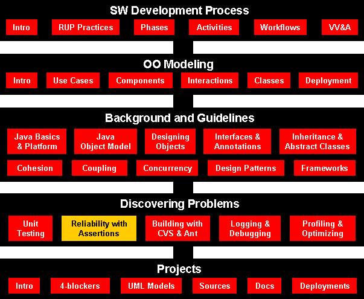

Senior Project Design
Reliability with Assertions
Course Map
J2SE (Java 2 Platform, Standard Edition) 1.4 adds a simple assertion
facility to Java. At the simplest level, an assertion checks a
boolean-typed expression that a developer specifically proclaims must be
true during program runtime execution. To support the new assertion
facility in J2SE 1.4, the Java platform adds the keyword assert
to the language, an AssertionError class, and a few
additional methods to java.lang.ClassLoader.
Assertion is a boolean expression that a developer specifically proclaims
to be true during program runtime execution. The simple idea of using assertions
can have an unexpected influence on a software program's design and
implementation.

Agenda
- Declaring Assertions
- Enabling assertions
java.lang.AssertionError
- Robustness and Correctness
- Using Assertions for Design by Contract (DBC)
- Conclusions
Declaring Assertions
You declare assertions with a Java language keyword, assert.
An assert statement has two permissible forms:
assert expression1;assert expression1
: expression2;
In each form, expression1 is the boolean-typed expression
being asserted. The expression represents a program condition that the
developer specifically proclaims must be true during program execution.
In the second form, expression2
provides a means of passing a String message to the
assertion facility. The following are a few examples of the first form:
assert 0
< value;assert ref != null;assert count == (oldCount + 1);assert ref.m1(parm);
As an example of
using assertions, class Foo listed below contains a simple
assertion in the method m1(int):
public class Foo {
public void m1( int value ) {
assert <give any boolean expression of what you want to assert>
System.out.println( "OK" );
}
public static void main( String[] args ) {
Foo foo = new Foo();
System.out.print( "foo.m1( 1 ): " );
foo.m1( 1 );
System.out.print( "foo.m1( -1 ): " );
foo.m1( -1 );
}
}
Since assert
is a new Java keyword, to see this example in action, you must compile
the class with a J2SE 1.4-compliant compiler. Furthermore, the compiler
requires a command-line option, -source 1.4, to signal
source compilation using the assertion facility.
javac -source
1.4 Foo.java
Enabling Assertions
Command-line options to the java command allow enabling or
disabling assertions down to the individual class level. The
command-line switch -enableassertions, or -ea
for short, enables assertions. The switch has the
following permissible forms:
-ea
---> enables
assertions in all classes except system classes.-ea:<class name>
---> turns on
assertions for the named class only.-ea:...
---> enable
assertions for for
the default, or unnamed package.-ea:<package name>... ---> enables assertions for the
specified package name and all pkgs under.- -esa
--->
The following
shows the resulting output:
foo.m1( 1 ): OK
foo.m1( -1 ): Exception in thread "main" java.lang.AssertionError
at Foo.m1(Foo.java:6)
at Foo.main(Foo.java:17)
java.lang.AssertionError
The assertion facility adds the class AssertionError to the java.lang package.
AssertionError contains a default constructor and seven single-parameter constructors.
The assert statement's single-expression form uses the default constructor,
whereas the two-expression form uses one of the seven single-parameter constructors.
To understand
which AssertionError constructor is used, consider how
assertions are processed when enabled:
Evaluate expression1
- If true
- If false
- And if
expression2
exists
- Evaluate
expression2
and use the result in a single-parameter form of the AssertionError
constructor
- Else
- Use the default
AssertionError constructor
So the first form of assertions does not give any information about the error. Hence nor recommended.
Excerise: Modify
the previous code to use assertion of second form.
Robustness and Correctness
- Reliability
can be categorized by two broad strokes: robustness and correctness.
- Robustness pertains to a system's ability to reasonably react to a wide
variety of circumstances and possibly unexpected conditions.
- Correctness
pertains to a system's adherence to an explicit or external
specification.
Robustness
- Java's
exception-handling facility addresses robustness.
- Exceptions provide a
structured means of handling unusual circumstances during program
execution.
- Specifically, the exception facility allows explicitly noting
exceptional conditions and provides a mechanism for handling such
exceptional conditions in specific code blocks.
- Java draws praise for
building exceptions into the base language.
Correctness
- Correctness
addresses a slightly different reliability concern.
- Whereas exceptions
facilitate robustness through an ability to recover gracefully from a
range of exceptional conditions, correctness deals with ensuring a
program does the right thing during normal program flow.
- Since
correctness pertains to normal conditions, Java's exception-handling
facilities do not readily assist correct program creation.
- Assertions enforce valid
runtime state at discrete checkpoints in an executing system.
- Perhaps
just as importantly, assertions explicitly declare developer intent in
the program text itself.
- Through assertions, developers can
definitively mark the boundaries of correct program execution versus
robust program execution, and provide valuable clues into expected
system behavior.
Be
assertive : Assertions clearly and
definitively document program expectation for normal execution. The
clearer, the better.
Using Assertions for Design by Contract (DBC)
- Central to DBC is
the notion of a contract between client and supplier.
- The interaction
between software classes is viewed as analogous to a contract between
two legal entities, each of which assumes specific responsibilities in
exchange for certain expectations.
- For example, I might contract with a
painting service to paint my house. The service assumes the
responsibility to paint the house, and I assume the responsibility to
pay for the service.
- I expect to have my house painted, and the painting
service expects to be paid. There is a clear connection between
expectation and responsibility.
To form a
software contract, DBC identifies three common uses for assertions:
- Preconditions:
conditions that must be true when entering a method -
assert precondition(); - Postconditions: conditions that must be true when exiting a
method -
assert postcondition(); - Invariants: conditions that must be true between all method
calls (upon entry to the method and between leaving the method).
An effective invariant would be defined as a method, e.g.
invariant() invoked after construction,
and at the beginning and end of each method: assert invariant();
Example
public void setSampleRate( int rate ) {
this.rate = rate;
}Suppose in the Sensor class the unit of measure for the variable
rate is Hertz. As an engineering unit, Hertz cannot be negative, so the
setSampleRate() method should not set the sample rate to a negative value.
Furthermore, sampling a sensor at too high a frequency could prove damaging.
|
public void setSampleRate( int rate )
throws IllegalArgumentException {
if(rate < MIN_HERTZ || MAX_HERTZ < rate)
throw new IllegalArgumentException
("Illegal rate: " + rate +
" Hz is outside of range [" +
MIN_HERTZ + ", " + MAX_HERTZ + " ]");
this.rate = rate;
}
|
- Using exceptions as the enforcing mechanism, however, is questionable.
- Shift focus from the method supplier to a client object calling the
method.
- Since
IllegalArgumentException is an unchecked
exception, the client can call the method without using a try/catch
block. That is, the client can easily ignore the thrown exception and
possibly unwittingly so if the client developer overlooks the throws
clause in the supplier's method documentation. - More commonly, developers
can see the exception, think to themselves, "Well, I won't do that," and
blithely omit a cumbersome
try/catch
construct.
setSampleRate(
100 ) causes the system to halt with the message:
Exception in thread "main" java.lang.IllegalArgumentException: Illegal
rate: 100 Hz is outside of range [ 1, 60 ]
at tmp.Sensor.setSampleRate(Sensor.java:9)
at tmp.Sensor.main(Sensor.java:20)
One solution for
preventing this type of client developer neglect is to change the thrown
exception to a checked exception named SensorException in
place of the previously unchecked IllegalArgumentException:
//PROVIDER
public void setSampleRate( int rate )
throws SensorException {
if( rate < MIN_HERTZ || MAX_HERTZ < rate )
throw new SensorException
( "Illegal rate: " + rate +
" Hz is outside of range [ " +
MIN_HERTZ + ", " + MAX_HERTZ + " ]" );
this.rate = rate;
} | //CLIENT
try
{
sensor.setSampleRate( 100 );
}
catch( SensorException se )
{//Do something sensible. |
Although the
supplier can't assume responsibility for the client's lack of effort,
the above code is nonetheless troublesome. Sure, the call to setSampleRate(
100 ) doesn't set the sample rate to an invalid value, but
neither does it sensibly report the attempt. The sample rate is
unchanged, and program execution blithely continues, presumably with
fingers crossed.
The million-dollar question: what is the
sensible thing do?
The developer could
perhaps, check the value, realize it was out of range, and attempt to
gracefully handle the situation.
why wait for a thrown exception before
performing such checks?
So if the
developer doesn't check the variable rate's value in the catch
block, what should be done? The developer should question using the
exception facility to handle a program correctness issue. During the catch
block execution, it is simply too late to do anything sensible.
As an
alternative, the following supplier code replaces the previous use of
exceptions with an assertion:
public void setSampleRate( int rate ) {
assert MIN_HERTZ <= rate && rate <= MAX_HERTZ :
"Illegal rate: " + rate + " Hz is outside of range [ " +MIN_HERTZ + ", " + MAX_HERTZ + " ]";
this.rate = rate;
}
Assertion throws AssertionException, which is a RuntimeException like
IllegalArgumentException.
So what's the difference?
There is, however, a significant philosophical shift in responsibility.
Calling setSampleRate() with an invalid input is no longer documented or handled as an unusual condition, but as an incorrect condition. Client code can no longer mask an incorrect call to setSampleRate() with a no-op catch block. Having used an assertion, incorrect calls to setSampleRate() are now dutifully reported through the Java error-handling mechanism. Yes, Java's assertion facility can be disabled at runtime, but that's not really under the control of the client developer, who cannot now lazily or unwittingly use the supplier code incorrectly.
Relaxing DBC
Although he emphasizes the importance of being able to express preconditions, postconditions, and invariants, and the value of using these during development, Bertrand Meyer admits that it is not always practical to include all DBC code in a shipping product. You may relax DBC checking based on the amount of trust you can place in the code at a particular point.
Here is the order of relaxation, from safest to least safe:
- The invariant check at the beginning of each method may be disabled first, since the invariant check at the end of each method will guarantee that the object’s state will be valid at the beginning of every method call. That is, you can generally trust that the state of the object will not change between method calls. This one is such a safe assumption that you might choose to write code with invariant checks only at the end.
- The postcondition check may be disabled next, if you have reasonable unit testing that verifies that your methods are returning appropriate values. Since the invariant check is watching the state of the object, the postcondition check is only validating the results of the calculation during the method, and therefore may be discarded in favor of unit testing. The unit testing will not be as safe as a run-time postcondition check, but it may be enough, especially if you have enough confidence in the code.
- The invariant check at the end of a method call may be disabled if you have enough certainty that the method body does not put the object into an invalid state. It may be possible to verify this with white-box unit testing (that is, unit tests that have access to private fields, so they may validate the object state). Thus, although it may not be quite as robust as calls to invariant( ), it is possible to “migrate” the invariant checking from run-time tests to build-time tests (via unit testing), just as with postconditions.
- Finally, as a last resort you may disable precondition checks. This is the least safe and least advisable thing to do, because although you know and have control over your own code, you have no control over what arguments the client may pass to a method. However, in a situation where (a) performance is desperately needed and profiling has pointed at precondition checks as a bottleneck and (b) you have some kind of reasonable assurance that the client will not violate preconditions (as in the case where you’ve written the client code yourself) it may be acceptable to disable precondition checks.
You shouldn’t remove the code that performs the checks described here as you disable the checks. If a bug is discovered, you’ll want to easily turn on the checks so that you can rapidly discover the problem.
Example: DBC + White-Box unit Testing
A circular array - an array used in a circular fashion.
When the end of the array is reached, the class wraps back around to the beginning.
We can make a number of contractual definitions for this queue:
- Precondition (for a put( )): Null elements are not allowed to be added to the queue.
- Precondition (for a put( )): It is illegal to put elements into a full queue.
- Precondition (for a get( )): It is illegal to try to get elements from an empty queue.
- Postcondition (for a get( )): Null elements cannot be produced from the array.
- Invariant: The region in the array that contains objects cannot contain any null elements.
- Invariant: The region in the array that doesn’t contain objects must have only null values.
Queue.java
Conclusions
Assertions are a welcome addition to the Java programming language. - The language supports a developer distinguishing between
the reliability issues of robustness and correctness. As a robustness
technique, Java exceptions facilitate handling unexpected or unusual
conditions.
- Java assertions, on the other hand, enable the explicit
declaration of acceptable program state as a correctness technique.
- Prior to the introduction of assertions, both robustness and
correctness techniques necessitated the use of the Java exception
facility.
- Preconditions,
conditions that must be true upon entering a method, are issues of
correctness, not robustness.
- Correspondingly, preconditions are best
handled via the assertion facility. As with parenting or teaching, you
should not confuse the granting of leniency in exceptional circumstances
with the misguided leniency of being nice all the time. A dose of
discipline in the form of assertions provides valuable assistance in
defining and maintaining the boundaries necessary to create reliable
systems.
- Although certainly
welcomed, assertions do not bring Design by Contract to Java. Assertions
merely provide the bedrock on which DBC is built.
- Missing are the
facilities to distinguish between important assertion uses and a
mechanism to allow the inheritance of assertions in subclasses.